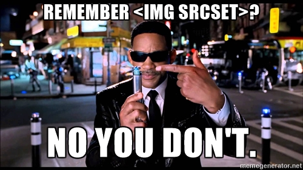
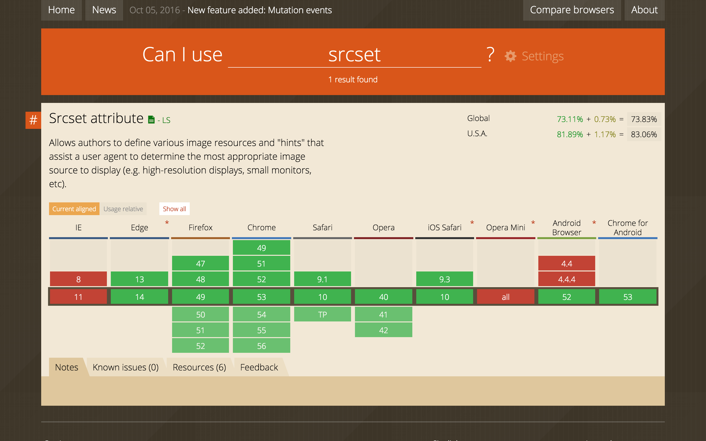
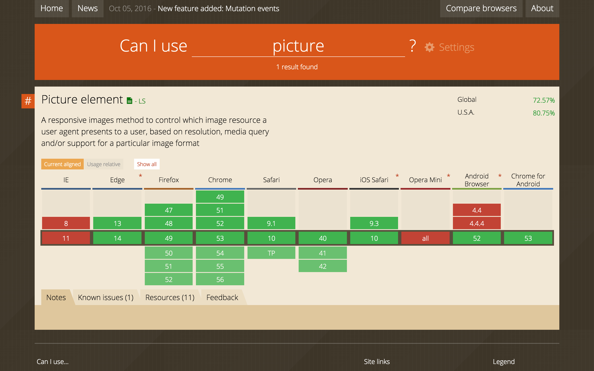
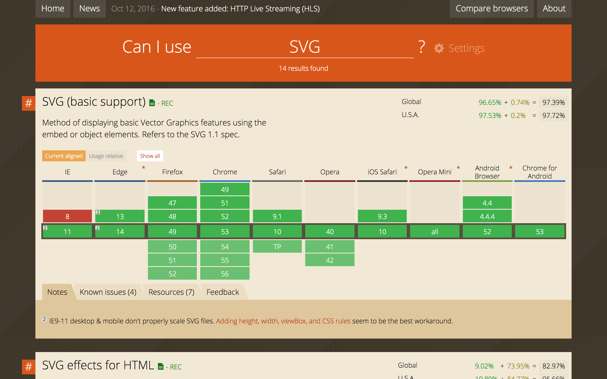
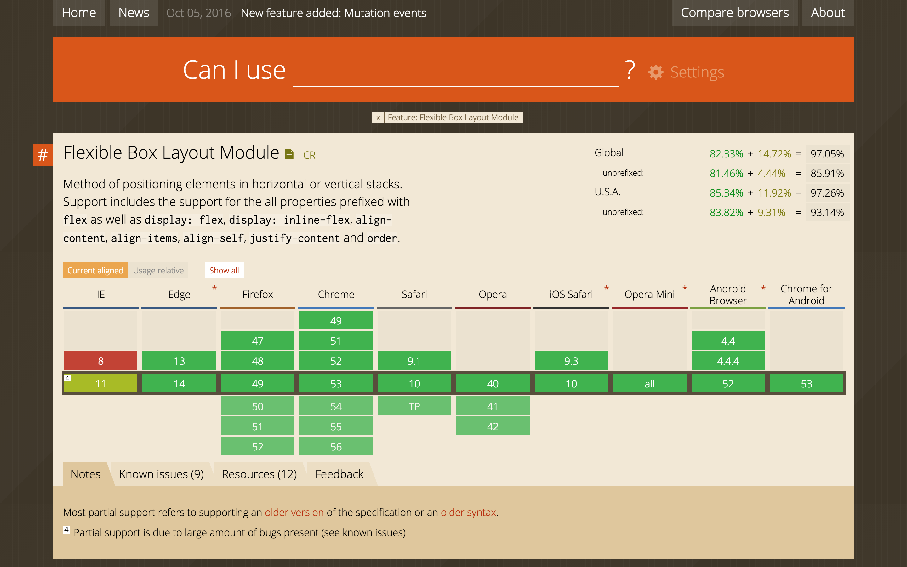

A Guide to Responsive WordPress in Three Acts
Follow along at taupecat.github.io/responsify
Act 1:
It's a Mobile-First Kind of World…
Responsive Websites in 2010
- Responsive Formula:
target ÷ context = result - Media Queries:
@media (min-width: 48em) {
/* do something awesome */
} - Flexible Media
Let's come back to this.
Responsive Websites in 2016
- Mobile-friendly
- Desktop-friendly
- Touch-friendly
- Performance-friendly
- Bandwidth-friendly
- Everybody-friendly
- Future-friendly
~ 56% of all web traffic now comes from mobile devices
Source: SimilarWeb "The State of Mobile Web in the US 2015"
"There are 1.2 billion mobile web users worldwide"
"In the U.S., 25% of mobile Web users are mobile-only"
Source: Code My Views
Act 2:
Responsive Images, Now Playing in WordPress Core Near You
? No you don't." style="width:100%;height:auto"/>
srcset & sizes
You tell the browser the possible sizes of images, and it serves the image appropriate for the viewport.
srcset & sizes
<img src="/wp-content/uploads/2016/10/placekitten-1200x800.jpg" alt="Placekittenz!"
srcset="[…]/placekitten-1200x800.jpg 1200w,
[…]/placekitten-300x200.jpg 300w,
[…]/placekitten-768x512.jpg 768w,
[…]/placekitten-1024x683.jpg 1024w"
sizes="(max-width: 709px) 85vw,
(max-width: 909px) 67vw,
(max-width: 984px) 60vw,
(max-width: 1362px) 62vw,
840px"/>
While [the] default will work out of the box for a majority of sites, themes should customize the default sizes attribute as needed using the wp_calculate_image_sizes filter.
<img srcset sizes/> is supported by 74% of browsers globally.*
Source: caniuse.com

<img srcset="…" sizes="…"/> works for versions of an image that have the same aspect ratio. If you want to do something different, then you're talking art direction.
Which means you're talking…
<picture>
The picture element is a markup pattern that allows developers to declare multiple sources for an image. By using media queries, it gives developers control as to when and if those images are presented to the user.
<picture>
<source media="(min-width: 40em)" srcset="big.jpg 1x, big-hd.jpg 2x">
<source srcset="small.jpg 1x, small-hd.jpg 2x">
<img src="fallback.jpg" alt="Moar kittenz!">
</picture>
add_image_size( $name, $width, $height, $hard_crop );
<picture> is supported by 73% of browsers globally.
Source: caniuse.com

But for true responsiveness, you need to think outside the pixel.
SVGs
Vector based, which means the shapes are defined by mathematical formulae, not individually-assigned pixels.
<img src="images/tricolor.svg"/>
<svg viewBox="0 0 100 100">
<rect x="0" y="0" width="50" height="100" fill="#ffff00"/>
<rect x="50" y="0" width="50" height="50" fill="#0000ff" />
<rect x="50" y="50" width="50" height="50" fill="#ff0000" />
</svg>
SVG is supported by 97% of browsers globally.
Source: caniuse.com

Act 3:
Let's Spend Some Time with Flexbox
Flexbox lets you…
- Have true, no-hack, equal-height columns
- Separate source order from layout
- Be inherently responsive
Go to the demo…
Flexbox is supported by 97% of browsers globally.
Source: caniuse.com

Thanks!
[Tracy Rotton](@taupecat)
WordPress / Web / Twitter / all the other things